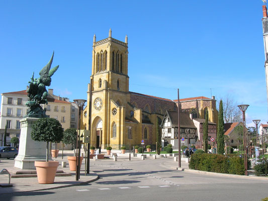

La Ruche d'Ali Baba
Une présence en ligne dédiée à La Ruche d'Ali Baba.
la-ruche-d-ali-baba.roanne.infoUn site indépendant pour découvrir la ville, ses tables, ses sorties et son histoire.

Roanne mérite mieux qu'une fiche dans un annuaire. Entre la Loire, le canal, la Côte roannaise et les monts de la Madeleine, il y a beaucoup à raconter, et à faire.
Roanne.info veut rassembler au même endroit les adresses fiables, les idées de sortie et les histoires de la ville, écrites par des passionés qui s'y intéressent.
Les lieux à voir, les balades au bord de l'eau, les musées et les points de vue.
Des tables, des marchés et des producteurs, des plus célèbres aux plus discrètes.
Un agenda des concerts, expositions, marchés et rendez-vous de la région.
L'histoire, le patrimoine et les anecdotes qui font Roanne.
Une présence en ligne dédiée à La Ruche d'Ali Baba.
la-ruche-d-ali-baba.roanne.infoUn site imaginé et réalisé autour du projet Mozaik.
mozaik.roanne.infoUn site conçu pour faire découvrir l'univers de Kofi 418.
kofi-418.roanne.infoLes premières rubriques qui arrivent bientôt, on compte sur vos contributions.
Si vous souhaitez un sous domaine comme comme les sites qu'on développe dans la forme mon-site.roanne.info y a pas de tarifs, donnez ce que vous voulez.
Voici mon tipeee https://fr.tipeee.com/nazimboudeffa
Si vous souhaitez également proposer une adresse, une photo ou une histoire/article. Écrivez-nous !
Vous pouvez également faire directement des Pull Requests sur le dépôt GitHub du site. Voir le dépôt
Merci pour votre soutien !